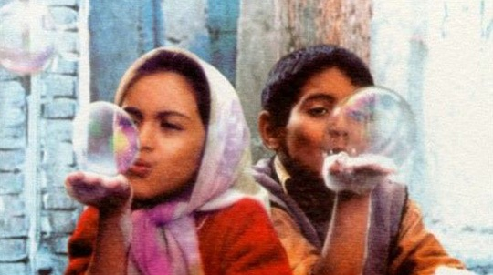

雨夹雪，天气阴冷而潮湿。北京该要进入寒冬了。冷的时候，人才对温暖更加敏感。一顶帽子，一双手套，一声问候，一个拥抱，都会简单的让你温暖起来，随之而来的，还有小小的幸福感。我喜欢在这样的冬天，暖一壶茶，看一场温暖的电影。一部美好的电影，或许可以温暖你一整个冬季。就像若干年前我看过的那部《天堂的孩子》，还有另外一个可爱的名字《小鞋子》。
那是一部纯洁透明的电影。即使它的画质有些粗砺，故事也很简单，但正是这样的朴实和单纯可以触动我们内心深处尚未磨灭的童心。伊朗灿烂的阳光里，贫穷的孩子奔跑在狭窄残破的小巷里。一双破旧的粉色带蝴蝶结的小鞋子，是兄妹俩深藏内心的小秘密。哥哥为此磨破了双脚，就为了给妹妹赢得一双新鞋；妹妹却在发现自己的鞋穿在盲人的女儿脚上时，默然的走开了。妹妹考试时焦急的偷看老师的手表，只是担心来不及把鞋换给哥哥；得了冠军的哥哥却因为没能拿到季军才有的奖品——一双鞋而哭泣。在两个孩子的眼里，一双小鞋子是那样的重要，几乎成了他们生活的全部意义。对于新鞋的幻想，就像手中升起的肥皂小泡泡一样绚丽。直到最后，看见爸爸从商店里出来，手里拿着两双新鞋，我们才如释重负。 影片结尾，哥哥还在为自己比赛失误拿到第一而自责，他把鞋脱下来，露出两只满是血泡的脚，伸进水池，一群金鱼游过来，在水里亲吻着那双小脚。这一刻，我们都微笑了。 西亚的阳光还是那么明亮，伊朗孩子的大眼睛里，有一个小小的天堂。那里藏着一些单纯的小念头和小秘密。那是属于他们的幸福。那是富人的孩子也会羡慕的幸福，也是我们这些已经不大会用儿童的眼光看世界的成年人，久违的幸福。很多时候我们都忘了，幸福不在于拥有什么，而在于希冀什么。